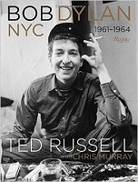
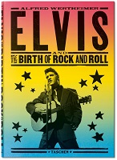
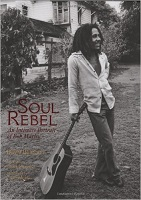
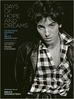
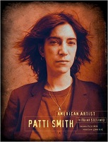
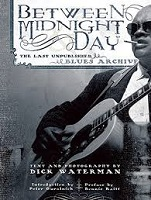
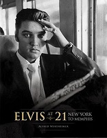
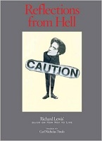
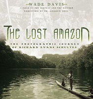
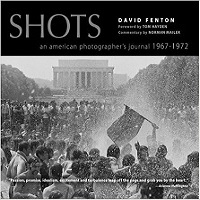

Copyright © Govinda Gallery 2015. Web design by Anna Jacoby.
Titles by Govinda Gallery

Bob Dylan NYC 1961-1964
by Ted Russell
Bob Dylan NYC 1961-1964 features the remarkable photographs of former Life magazine photographer Ted Russell. Published by Rizzoli, this book is the first publication of Russell’s photographs of Dylan when the young folk singer first arrived in Greenwich Village at 20-years-old. Bob Dylan NYC also features an extraordinary foreword by Donovan and a preface by the book’s editor Chris Murray.

Elvis and the Birth of Rock and Roll
By Alfred Wertheimer
"Elvis who?" was photographer Alfred Wertheimer’s response when, in early 1956, an RCA Victor publicist asked him to photograph an up-and-coming crooner from Memphis. Little did Wertheimer know that this would be the job of his life: just 21 years old, Presley was about to become a legend. Trailing Presley like a shadow, Wertheimer took nearly 3,000 photographs of Presley that year, creating a portrait of a man on the brink of superstardom. Now available as a TASCHEN standard edition, Elvis and the Birth of Rock and Roll collects Wertheimer’s most remarkable shots from that magical year.
Rolling Stones 50 x 20
Chris Murray, Richard Harrington, Chris Salewicz
Published on the occasion of the Rolling Stones 50th anniversary, Murray writes: "This book is a tip-of-the-hat to the greatest rock n roll band in the world." The beautiful hardback volume also includes a foreword by Richard Harrington, and an afterword by Chris Salewicz. Rolling Stones 50x20 features the photographs of Gus Coral, Bob Bonis, Eric Swayne, Gered Mankowitz, Jan Olofsson, Eddie Kramer, Michael Joseph, Barry Feinstein, Baron Wolman, Michael Cooper, Michael Putland, Bob Gruen, Mark Weiss, Chris Makos, William Coupon, David Fenton, Claude Gassian, Ross Halfin, Mark Seliger, and Fernando Aceves.

Soul Rebel: An Intimate Portrait of Bob Marley
By David Burnett
In 1976, while on assignment in Jamaica for Time magazine, David Burnett photographed Bob Marley for the first time. Burnett became so entranced by Marley’s charisma that he continued to document the reggae king throughout his groundbreaking "Exodus" tour. Burnett’s vision, coupled with Marley’s larger-than-life charisma, resulted in an amazing collection of images. This stunning visual biography offers a rare look at Marley’s personal life in Jamaica, as well as the exodus from his home country that culminated in his tragic death in 1981.

Days of Hope and Dreams: An Intimate Portrait of Bruce Springsteen
By Frank Stefanko
This book reveals early, unpublished images of Bruce Springsteen that only a friend and confidant could capture. Also born and raised in a working-class New Jersey home, photographer Frank Stefanko crossed paths with Springsteen by way a mutual friend, musician Patti Smith. Their meeting spurred a photographic collaboration that lasted from 1978 to 1982 and produced cover photos for Darkness on the Edge of Town and The River. Days of Hope and Dreams presents an unforgettable selection of the photographer’s most candid and personal images from his time with Springsteen.

Patti Smith: American Artist
By Frank Stefanko
Patti Smith was a favorite photographic subject for Frank Stefanko during college. "Patti had jet-black hair and pale blue eyes that could see right through you. I was captivated by her look; tall, thin, with porcelain skin, sharp features, and those piercing eyes. With me, in terms of portraits, it’s always the eyes first, then the rest of the face comes into view," Stefanko recalls. The intimate photographs capture the period of cultural change from the mid 1960s to the late 1970s. The book chronicles Smith’s emergence as a writer, painter, singer-songwriter, performer, poet, mystic, and political activist.

Between Midnight and Day: The Last Unpublished Blues Archive
By Dick Waterman
This book celebrates the rich heritage of one of America’s greatest cultural legacies, the blues. Dick Waterman has been representing and photographing blues artists for over fifty years. In Between Midnight and Day, he collects these rare images and illuminates them with his own first-hand commentary offering his unique perspective as an agent, representative, photographer, and friend to some of the most influential figures in American music. Included are blues legends Buddy Guy, John Lee Hooker, Chuck Berry, Ray Charles, Bob Dylan, Son House, Mississippi John Hurt, Skip James, Janis Joplin, B.B. King, Fred McDowell, Bonnie Raitt, Big Mama Thornton, and many more.

Elvis at 21: From New York to Memphis
By Alfred Wertheimer
With unimpeded access to the young performer in 1956, Alfred Wertheimer was able to capture the unguarded and everyday moments in Elvis’ life. Wertheimer’s photographs of Elvis are extraordinary and he appears almost ethereal, whether reading a newspaper while waiting for a cab, or washing his hands during one of his many train trips. After Elvis’ induction into the army, the world seemingly forgot about Wertheimer’s magical photographs for nineteen years, until Aug 16, 1977, the day Elvis died and Time Magazine called. "The phone hasn’t really stopped ringing in the last thirty years," said Wertheimer.

Knockout: The Art of Boxing
By Ken Regan
Ken Regan covered Muhammad Ali’s first fight in 1964: his historic victory over Sonny Liston in Miami Beach. For the next four decades, Regan would go on to chronicle the greatest fights and the greatest fighters of the age. His photogrpaphs include many of the most enduring images ever created in the annals of boxing, as well as portraits of notable trainers, managers, promoters, writers, and the whole panoply of celebrities associated with the sport. Featuring some of the greatest ring action in boxing history, Knockout takes us from sparring sessions and press conferences to weigh-ins and post-fight sessions.

Reflections From Hell: Richard Lewis’ Guide on How Not to Live
By Richard Lewis, Artwork by Carl Nicholas Titolo, Foreword by Larry David
Reflections from Hell presents decades of Richard Lewis’ "dark comedic premises," jokes and reflections that are fantastically illustrated by the remarkable art of Carl Titolo. Lewis recounts that he was "blown to smithereens" when introduced to the world of Carl Titolo. Titolo’s visual interpretations of Lewis’ words create a humorous and compelling reflection on modern life and page turning knee slapper. As Lewis says of Titolo’s art; "though a entirely different medium, it felt like it was stolen right out of my own torment."
John & Yoko: A New York Love Story
By Allan Tannenbaum
In November 1980, on the eve of John Lennon’s untimely murder, photographer Allan Tannenbaum had unique access to John and Yoko, who were emerging from five years of seclusion and avoiding the media. The resulting photographs portray a couple deeply in love--playful, spiritual, and remarkably at home in front of the camera while expressing their feelings to each other. John cherished these images of Yoko and was moved by their beauty and grace. This collection is both a celebration of and tribute to one of our greatest artists and an everlasting love affair.

The Lost Amazon: The Photographic Journey of Richard Evans Schultes
By Wade Davis
Richard Evans Schultes may have been the greatest explorer of the Amazon and was regarded as the "father of ethnobotany." Taking what was meant to be a short leave from Harvard in 1941, he surveyed the Amazon basin almost continuously for 12 years, during which time he lived among two dozen different Indian tribes, mapped rivers, sought sources of rubber for the US government during WWII, and collected and classified 30,000 botanical specimens, including 2,000 new medicinal plants. Schultes chronicled his stay in hundreds of remarkable photographs of the tribes and the land, evocative of the great documentary photographers such as Edward Sheriff Curtis.

Shots: An American Photographer’s Journal
By David Fenton
More than 100 vivid black and white photographs intimately capture the intensity of a time when idealism and the passion of youth fed the counterculture movements that forever rocked our social foundations. Featuring candid, behind-the-scenes commentary by photographer David Fenton, Shots follows some of the most historic moments and notorious personalities of the turbulent 60s, highlighting the spirit of rebellion and civil unrest that would ultimately shape a generation.